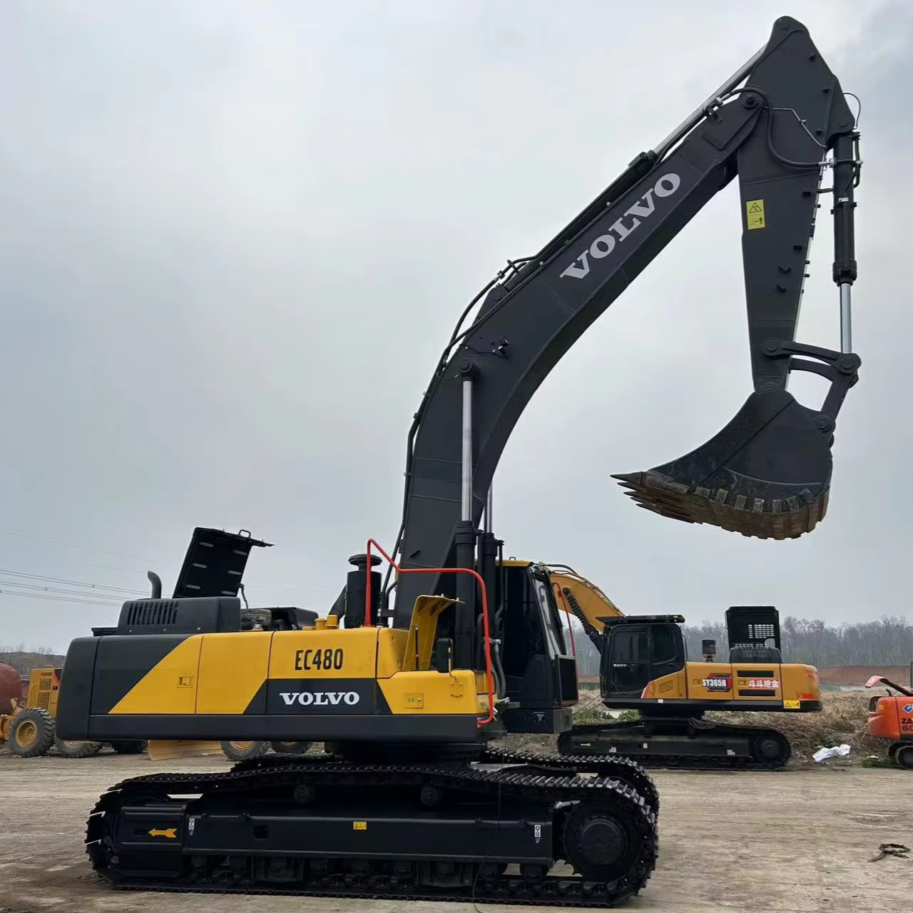

Refurbished Volvo EC480 Excavator
The Volvo EC480 is a robust and reliable crawler excavator designed for high-performance tasks in demanding environments. Known for its strong lifting capacity, advanced hydraulics, and fuel-efficient engine, the EC480 is a favorite in the construction, mining, and heavy-duty industries. Opting for a refurbished Volvo EC480 allows businesses to enjoy the benefits of a high-quality, durable machine without the high cost of a new model.
Honestly, it's almost impossible to buy a brand new excavator from China. They either don't exist or are made in China. If a Chinese seller tells you their Caterpillar/Komatsu/Volvo/Kobelco/Hitachi is brand new, they're lying. Therefore, a refurbished excavator is your best bet.

Here are the detailed specifications for a refurbished Volvo EC480DL or EC480E excavator:
Operating Weight and Dimensions
- Operating Weight: 46,000–48,500 kg
- Transport Length: ~12.2 meters
- Transport Width: ~3.44 meters
- Transport Height: ~3.78 meters
- Tail Swing Radius: ~3.8 meters
- Ground Clearance: ~500 mm
- Track Width: 600 mm standard
Engine and Powertrain
- Engine Model: Volvo D13H (Tier 3 or Tier 4 Final compliant)
- Rated Power Output: ~270 kW (362 hp) @ 1,800 rpm
- Maximum Torque: ~1,800–1,950 Nm
- Fuel Tank Capacity: ~700 liters
- Travel Speed: 3.0–5.0 km/h
- Swing Speed: ~8.6 rpm
- Gradeability: Up to 35°
Hydraulic System
- Main Pump Type: Electro-hydraulic system with intelligent flow control
- Flow Rate: ~2 × 360–380 L/min
- System Pressure: Up to 36 MPa
- Hydraulic Oil Capacity: ~500 liters
- Boom/Arm/Bucket Priority: Programmable for faster cycle times
- Regeneration System: Prevents cavitation and improves simultaneous operations
Performance Metrics
- Bucket Capacity: 1.77–3.8 m³ (SAE heaped)
- Max Digging Depth: ~7.5 meters
- Max Reach (Horizontal): ~11.8 meters
- Max Dump Height: ~7.2 meters
- Bucket Digging Force: ~250–260 kN
- Arm Digging Force: ~180–190 kN
Cab and Operator Features
- Cab Type: ROPS/FOPS certified
- Display: Contronics system with advanced diagnostics
- Controls: Electro-hydraulic joysticks with customizable sensitivity
- Comfort: Air suspension seat, climate control, low vibration cab
- Visibility: Sliding windshield, wide glass area, rear-view camera
Smart Features and Efficiency
- Fuel Efficiency: Volvo Advanced Combustion Technology (V-ACT), auto idle, ECO mode
- Emissions Control:
- Tier 3 units: No DPF/SCR
- Tier 4 Final units: DPF + SCR + EGR
- Telematics Ready: Volvo CareTrack system for remote diagnostics and fleet tracking
- Power Boost: Enhanced digging and lifting forces on demand
Attachments Compatibility
- Standard Bucket: 1.77–3.8 m³
- Optional Tools: Hydraulic breaker, demolition shear, compactor, ripper
- Quick Coupler: Hydraulic or manual options available
Refurbishment Scope
Refurbished EC480 units typically include:
- Engine Overhaul: Turbocharger, injectors, seals, cooling system
- Hydraulic Restoration: Pump recalibration, valve block testing, hose replacement
- Electrical Diagnostics: Monitor, sensors, wiring harness
- Cab Reconditioning: Seat, joysticks, HVAC, repainting
- Structural Repairs: Boom/bucket welding, bushing replacement, undercarriage rebuild
Overview of the Volvo EC480 Excavator
The Volvo EC480 is part of the company's larger lineup of crawler excavators, designed to offer exceptional performance in heavy-duty applications. It is commonly used for tasks such as digging, trenching, lifting, and material handling. The EC480 is equipped with advanced technology and innovative features that improve productivity and reduce operational costs.
Key Specifications of the Volvo EC480
-
Operating Weight: Approximately 47,000–49,000 kg (103,600–108,000 lbs)
-
Engine Power: Around 250 kW (335 hp)
-
Max Digging Depth: Up to 7.5 meters (24.6 feet)
-
Max Reach: Around 11.1 meters (36.4 feet)
-
Bucket Capacity: Typically 1.8–2.2 cubic meters (63–78 cubic feet)
-
Fuel Tank Capacity: Approximately 500 liters (132 gallons)
-
Travel Speed: Up to 5.5 km/h (3.4 mph)
These specifications indicate that the Volvo EC480 is a powerful and versatile machine, suitable for a wide range of large-scale projects where high lifting power and digging depth are required.
Performance and Engine Efficiency
The EC480 features a powerful engine and hydraulics that combine to provide excellent performance in even the most demanding tasks.
-
Engine Power: Powered by a Volvo D13 engine, the EC480 delivers approximately 250 kW (335 hp) of power, allowing it to tackle challenging tasks such as heavy lifting, digging in tough materials, and handling large loads. The engine is designed to be both powerful and fuel-efficient, optimizing performance while minimizing operational costs.
-
Fuel Efficiency: One of the standout features of the EC480 is its Fuel Efficiency System, which helps reduce fuel consumption during heavy use. This system automatically adjusts the engine's fuel usage based on the load, ensuring that the machine operates at optimal efficiency. This fuel-efficient design helps reduce operational costs, especially on long-term or high-intensity projects.
-
Emission Standards: The EC480 meets strict emissions standards, making it compliant with global environmental regulations. Its low-emission engine ensures that it operates with minimal environmental impact, which is essential for projects located in areas with stringent environmental guidelines.
Hydraulic System: Power, Precision, and Versatility
The Volvo EC480 is equipped with an advanced hydraulic system that enhances its productivity and precision.
-
Powerful Hydraulics: The excavator’s hydraulic system is designed to handle heavy workloads with ease. It features a load-sensing system that adjusts hydraulic flow to match the demands of the task, ensuring efficient and responsive operation.
-
Fast Cycle Times: Thanks to its powerful hydraulic pumps, the EC480 has fast cycle times, which helps increase productivity on time-sensitive projects. The hydraulic system ensures that the machine can operate with high efficiency, whether it’s digging, lifting, or moving materials.
-
Precision Controls: The machine's hydraulic controls provide precision during operation, especially for tasks that require fine movements, such as grading or trenching. This makes the EC480 an ideal choice for both heavy-duty and delicate operations.
Durability and Design for Tough Conditions
The Volvo EC480 is built for longevity, designed to withstand harsh working conditions and demanding tasks.
-
Robust Undercarriage: The undercarriage of the EC480 is designed for durability and stability, even on rough and uneven terrain. It features long-lasting components that help extend the lifespan of the machine while maintaining superior stability.
-
Heavy-Duty Frame and Components: The EC480 is equipped with a heavy-duty frame and reinforced structural components that allow it to endure the stresses of high-intensity work. Its tough build ensures that it can handle demanding tasks, whether it’s working in mining, construction, or other heavy industries.
-
Quality Tracks: The tracks on the EC480 are designed for high traction and extended service life. They are durable enough to provide superior stability even on soft or slippery surfaces, making it ideal for challenging job sites.
Operator Comfort and Safety
Volvo is known for prioritizing operator comfort and safety, and the EC480 is no exception.
-
Spacious Cab: The EC480 features a spacious, comfortable cabin designed to minimize operator fatigue. The cab is equipped with air conditioning, adjustable seats, and clear visibility to improve the overall working experience, particularly on long working hours.
-
Advanced Controls: The EC480 is equipped with intuitive controls, including a Joysticks and monitoring system, making it easier for the operator to manage the machine's functions and monitor critical data in real time. The system allows for efficient work management and ease of operation.
-
Safety Features: The EC480 comes equipped with ROPS (Rollover Protective Structure) and FOPS (Falling Object Protective Structure) to ensure operator safety in the event of a rollover or falling debris. Additionally, the EC480 features an advanced alarm system to alert the operator of any potential issues or dangerous situations, minimizing the risk of accidents.
Benefits of Choosing a Refurbished Volvo EC480
Choosing a refurbished Volvo EC480 offers several distinct advantages over purchasing a new model, particularly for businesses with budget constraints or those seeking to maximize their return on investment.
-
Cost Savings: Refurbished EC480 excavators can save businesses up to 30–40% compared to purchasing a new model. The price difference allows businesses to allocate funds to other operational needs or invest in additional equipment.
-
Comprehensive Refurbishment Process: A refurbished EC480 undergoes a thorough inspection and restoration process, where key components, such as the engine, hydraulics, and undercarriage, are restored or replaced to ensure like-new performance. This process guarantees that the machine is in excellent working condition and free of defects.
-
Warranty and Support: Many refurbished EC480 machines come with warranties, ensuring that any potential issues are covered. Refurbished models often come with factory-backed support or third-party service contracts, providing peace of mind for buyers.
-
Environmental Impact: By choosing a refurbished machine, businesses contribute to sustainability by reducing the demand for new manufacturing. The environmental impact of producing new machines is significant, and opting for refurbished equipment helps reduce waste and energy consumption.
Maintenance Tips for the Volvo EC480
To keep your Volvo EC480 running smoothly for years, regular maintenance is essential.
-
Hydraulic System Maintenance: Regularly inspect hydraulic lines and hoses for leaks, clean filters, and check for any hydraulic fluid contamination. The hydraulic system should be serviced regularly to ensure smooth performance.
-
Engine Maintenance: Follow the manufacturer’s recommendations for oil changes and filter replacements. Check coolant levels and inspect the exhaust system to ensure everything is functioning properly.
-
Undercarriage and Tracks: Regularly check the undercarriage and tracks for wear and tear. Clean the tracks to avoid dirt buildup, which can cause damage to the undercarriage. Monitor the condition of the rollers, idlers, and sprockets.
-
General Inspections: Conduct periodic inspections of all critical systems, such as electrical components, fuel systems, and air filters, to avoid unexpected downtime. Early detection of any issues can prevent costly repairs down the road.
Conclusion
The Volvo EC480 is a powerful, reliable, and durable excavator designed to tackle demanding tasks in heavy-duty applications. With its fuel-efficient engine, precision hydraulic system, and robust design, it is ideal for industries such as construction, mining, and infrastructure. A refurbished Volvo EC480 offers a cost-effective solution for businesses seeking a high-performance machine at a lower price point. With proper maintenance and care, the EC480 will continue to deliver dependable performance for years, making it an excellent investment for any business.
Our Commitment
- 2 years / 4000 hours warranty.
- EPA certified.
- No sweatshop labor.
Contacts

- [email protected]
- Youtube Instagram Facebook
- Navigation: G206 (Sishu Bridge) in Changfeng County, Hefei City, Anhui Province, 200 meters north to the east